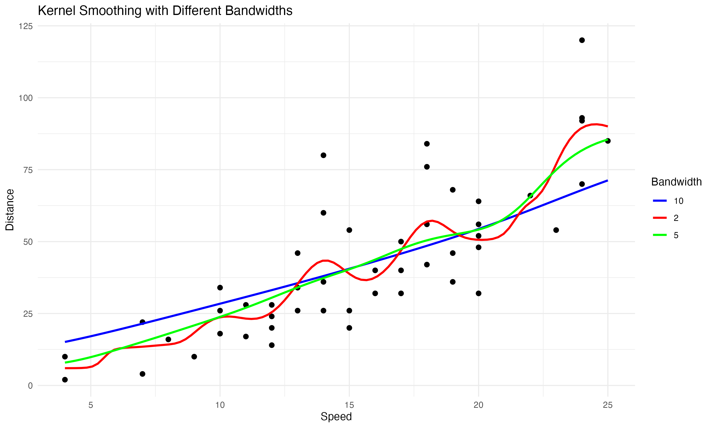

The Limits of Nonparametric Models
Background
Nonparametric statistics offers a powerful toolkit for data analysis when the underlying data-generating process is too complex or unknown to be captured by parametric models. Unlike parametric methods, which assume a specific form for the underlying distribution or functional relationship, nonparametric approaches let the data “speak for itself.”
In earlier articles, we explored parametric and semiparametric models, where the focus was on attaining the lowest possible variance. However, in nonparametric statistics, this goal is unsuitable, as prioritizing minimal variance often introduces significant bias. The spotlight falls instead on selecting the optimal tuning parameter: the bandwidth. This article explains the various considerations and mathematical details associated with selecting the optimal bandwidth value in Kernel Density (KD) and Kernel Regression (KR) estimation.
Notation
We begin by establishing the mathematical terminology and notations essential for our analysis.
Kernels
A kernel function \(K(\cdot)\) is a non-negative, symmetric function that integrates to \(1\) over its domain. It acts as a weighting function that determines how observations contribute to the estimate at any given point, effectively spreading the mass of each data point over a local neighborhood.
Kernel Density
KD is sort of like creating a smooth histogram. The kernel density estimator for a sample of n observations \(X_1, X_2, \dots, X_n \in \mathbb{R}\) is given by:
\[\hat{f}_h (x) = \frac{1}{n h} \sum_i K\left(\frac{x - X_i}{h}\right),\]
where \(h > 0\) is the bandwidth, a positive scalar controlling the smoothness of the estimate. Its function is to determine the window length around x in which the observations get positive weight.
The value \(\hat{f}_h (x)\) will be large when there are many data points around \(x\), and small otherwise. Some popular kernel functions like Epanechnikov, Gaussian or triangular assign higher weights to observations closer to \(x\) and decaying importance to data further away.
Density estimation can also be performed in higher dimensions where the curse of dimensionality lurks in the background. In two dimensions, these estimates typically take the form of heat map-type figures.
Kernel Regression
Kernel regression, also known as local regression, is much like fitting a flexible smooth curve through data points. In this context, we have access to \(n\) observations of an outcome variable \(Y\). The objective is to estimate the conditional mean function at some point X=x:
\[m(x) = \mathbb{E}[Y \mid X = x].\]
Among various kernel regression methods, the Nadaraya-Watson (NW) estimator is particularly popular. It is defined as:
\[\hat{m}_h (x) = \frac{\sum_i K\left(\frac{x - X_i}{h}\right) Y_i}{\sum_i K\left(\frac{x - X_i}{h}\right)}.\]
The NW method fits a local constant around \(x\) equal to the average \(Y\) in that region (determined by the bandwidth). This approach is also known as local constant regression. More sophisticated variants include local linear and quadratic methods, which extend this fundamental idea but require more data. Across all these approaches, the bandwidth \(h\) serves as the key parameter that determines the trade-off between bias and variance, a relationship we will explore in detail below.
A Closer Look
In practice, the choice of kernel is not as consequential. The primary focus of nonparametric statistics is selecting the optimal bandwidth \(h\).
The Bias-Variance Tradeoff
At the heart of bandwidth selection is the bias-variance tradeoff. Intuitively:
- Small bandwidth (“overfitting”): Captures fine details but also noise, leading to high variance and low bias.
- Large bandwidth (“underfitting”): Smoothes over the noise but can miss important structure, leading to high bias and low variance.
- For nonparametric curve estimation, the mean integrated squared error (MISE) is a common loss function for evaluating performance:
\[\text{MISE}(h) = \mathbb{E}\left[ \int \left( \hat{f}_h(x) - f(x) \right)^2 dx \right].\]
This decomposes into bias and variance terms:
\[\text{MISE}(h) = \int \text{Bias}^2(\hat{f}_h(x)) dx + \int \text{Var}(\hat{f}_h(x)) dx.\]
MISE is analogous to the mean squared error (MSE) commonly used in machine learning, but integrated, or summed, across the support of the data. Minimizing the MISE yields the optimal bandwidth by balancing the bias-variance tradeoff, a fundamental concept in statistical estimation theory.
Optimal \(h\) for Kernel Density
Silverman’s rule of thumb provides a practical, closed-form approximation for \(h\) in KDE, assuming the data is roughly Gaussian. The expression is:
\[h^* = \left( \frac{4\sigma^5}{3n} \right) ^{\frac{1}{5}} = 1.06 \sigma n^{-1/5},\]
where \(\sigma\) is the standard deviation of the data. This formula emerges from theoretical analysis of the bias-variance tradeoff and serves as an effective initial bandwidth choice. While it performs well for many datasets, particularly those with approximately normal distributions, it may not be optimal for multimodal or heavily skewed distributions.
Optimal \(h\) for Kernel Regression
For Nadaraya-Watson regression, several methods exist for selecting the bandwidth h. Cross-validation provides reliable results but can be computationally demanding. Theoretical analysis based on MISE minimization for common kernel functions suggests that the optimal bandwidth follows the relationship:
\[h^* \propto n^{-1/5}.\]
This expression highlights a fundamental characteristic of nonparametric methods: their convergence rate is slower than that of parametric methods. This represents one manifestation of the curse of dimensionality in nonparametric estimation. Furthermore, this relationship only specifies the rate at which the optimal bandwidth should decrease with sample size (proportionality to \(n^{-1/5}\)), rather than providing an exact value. Without the proportionality constant, its direct practical application is limited.
An Example
Let’s illustrate bandwidth selection with a simple example.
# clear workspace
rm(list=ls())
# load data
require(graphics)
# plot
with(cars, {
plot(speed, dist)
lines(ksmooth(speed, dist, "normal", bandwidth = 2), col = 2)
lines(ksmooth(speed, dist, "normal", bandwidth = 5), col = 3)
lines(ksmooth(speed, dist, "normal", bandwidth = 10), col = 4)
})# same idea, but with the iris dataset
import numpy as np
import pandas as pd
import matplotlib.pyplot as plt
from sklearn.datasets import load_iris
from statsmodels.nonparametric.kernel_regression import KernelReg
# Load iris dataset
iris = load_iris()
df = pd.DataFrame(data=iris.data, columns=iris.feature_names)
# Choose two continuous variables
x = df['sepal length (cm)'].values
y = df['petal length (cm)'].values
# Define a function to plot kernel smoothed lines with varying bandwidths
def plot_kernel_smoothing(x, y, bandwidths):
plt.figure(figsize=(8, 6))
plt.scatter(x, y, alpha=0.5, label='Data', color='black')
x_grid = np.linspace(x.min(), x.max(), 200)
colors = ['red', 'green', 'blue']
for bw, color in zip(bandwidths, colors):
kr = KernelReg(endog=[y], exog=[x], var_type='c', bw=[bw])
mean, _ = kr.fit(x_grid)
plt.plot(x_grid, mean, label=f'bandwidth={bw}', color=color)
plt.xlabel('Sepal Length (cm)')
plt.ylabel('Petal Length (cm)')
plt.title('Kernel Smoothing with Varying Bandwidths')
plt.legend()
plt.grid(True)
plt.show()
# Call function with different bandwidths
plot_kernel_smoothing(x, y, bandwidths=[0.2, 0.5, 1.0])This yields a simplified version of the following figure:

The green line corresponds to the Nadaraya-Watson regression with an optimal bandwidth and features some degree of curvature. The red line has a smaller bandwidth (higher variance, lower bias), and the blue line is undersmoothed (higher bandwidth).
Bottom Line
Bandwidth selection is critical for nonparametric methods to balance bias and variance.
Silverman’s rule of thumb offers a simple yet effective starting point for KD.
For commonly used second-order kernels, the optimal bandwidth in KR scales as \(n^{-1/5}\).
Practical implementation often relies on cross-validation or plug-in methods and is limited by the curse of dimensionality.
References
Hastie, T., Tibshirani, R., & Friedman, J. (2009). The Elements of Statistical Learning.
Li, Q., & Racine, J. S. (2023). Nonparametric econometrics: theory and practice. Princeton University Press.
Silverman, B. W. (1986). Density Estimation for Statistics and Data Analysis. Wand, M. P., & Jones, M. C. (1995). Kernel Smoothing.
Wasserman, L. (2013). All of statistics: a concise course in statistical inference. Springer Science & Business Media.